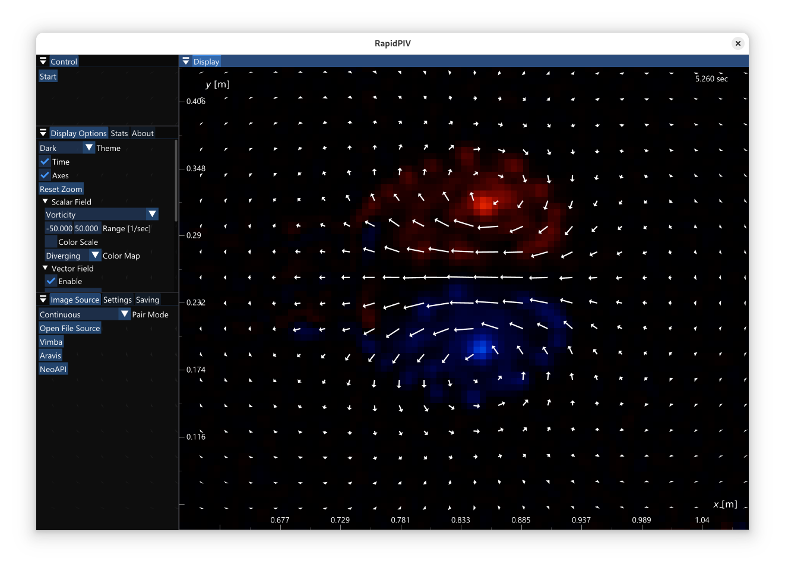

Hi! My name is Sam, and I'm an undergrad at Caltech working in computer science. Right now, I'm working at NVIDIA and NASA in the Bay Area before I return to school in the fall.
At Caltech, I work with the Gharib aerospace group on fluid mechanics, and I work at JPL on laser communications. I also work on computational chemistry with the Nelson group.
For fun, I like listening to music, driving, and hiking to the top of mountains.
Project Highlights
-
NASA Laser Communication Software
I create software for NASA's space lasers. In 2023, my software decoded this transmission from deep space back to Earth which contained a cat video, demonstrating a novel method of high-bitrate deep space communication. I also invented GPU-based laser communications receivers, which outperform previous FPGA-based systems by 1.5x.1
The Taters cat video sent by NASA which my software received. Source: CNN -
GPU-accelerated image processing for aerospace
I created software that uses GPUs to analyze how air and water move by tracking particles in high-speed video. This technique helps engineers design airplanes, cars, and understand fluid mechanics phenomenon. My algorithms can process the data in real-time, while previous methods took days to analyze minutes of footage.

Screenshot of the RapidPIV software, available for free.
Selected Publications
- S. Foxman, R. Rogalin. "GPU Receivers for Deep Space Optical Communications". Presenting at SPIE Photonics West, Free-Space Laser Communications XXXVIII, January 2026.
- S. Bollt, S. Foxman, M. Gharib. "RapidPIV: Full Flow-Field kHz PIV for Real-Time Display and Control". Submitted to Measurement Science & Technology, 2025. Preprint https://www.arxiv.org/abs/2504.17987.
- L. Coffin, A.J. Torres, S. Wallen, P. Calub, K. Gauld, I. Kwaterski, S. Foxman, H. Ramsperger, E. Xu, ..., K. Carpenter, S.J. Chung. "PILLARS: Plume-Deployed Inflatable for Launch and Landing Abrasive Regolith Shielding". AIAA Aviation Forum and Ascend, July 2025. https://doi.org/10.2514/6.2025-4126
- B. Ehlmann, ..., S. Foxman, ..., and the Lunar Trailblazer Team. "Lunar Trailblazer Spacecraft Tracking and Mission Recovery Attempt: Characterization of Status and Behavior of a Non-Cooperative Object in Cis-Lunar Space". Manuscript submitted, August 2025.
- D. Eremin, K. Jha, D. Delgadillo, H. Zhang, S. Foxman, S. Johnson, N. Vlahakis, D. Cascio, V. Lavallo, J. Rodriguez, H. Nelson. "Spatially-Aware Diffraction Mapping Enables Fully Autonomous MicroED". In review at Journal of the American Chemical Society (JACS), 2025.
- B. Ehlmann, ..., S. Foxman, ..., and the Lunar Trailblazer Team. "The Lunar Trailblazer Mission: Science Motivation and Implementation of a Pioneering Small Satellite for Lunar Water and Lunar Geology in the NASA SIMPLEx program". Submitted to Journal of Geophysical Research, August 2025.
Patents and Inventions
- S. Bollt, S. Foxman, M. Gharib. "Portable Real-Time Optical Flow-Field Sensor". U.S. Patent Application No. 63/715,303, November 2024.
- S. Foxman, R. Rogalin. "GPU-Based Optical Communications Modem". Software available under license from Caltech/NASA Jet Propulsion Laboratory, June 2025.
- S. Foxman, S. Bollt, M. Gharib. "Systems and Methods for Optical Flow Using GPU Tensor Processing Cores". U.S. Patent Application No. 63/823,578, June 2025.
Footnotes
- GPU receiver achieved 75 Mbps from a 4 Watt transmitter at a distance of 2.25 * 10^8 km, versus 50 Mbps for FPGA system. See upcoming paper at SPIE Photonics West for details.